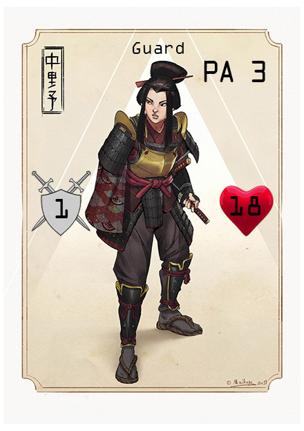
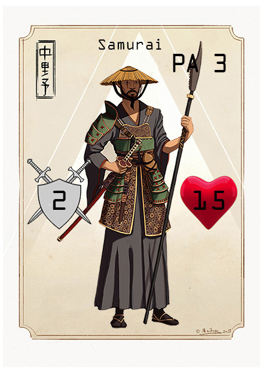
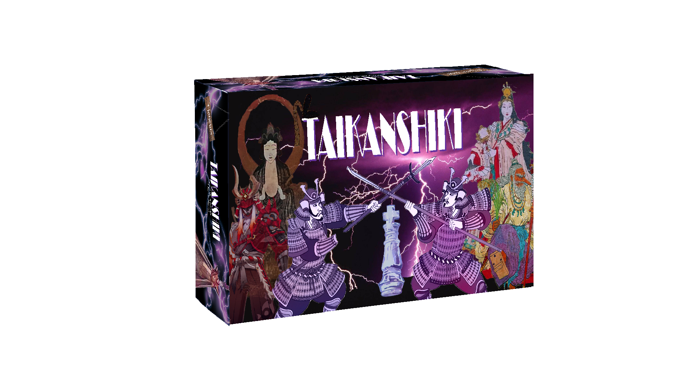

L’empereur est mort ! Tout le Japon féodal est en deuil. Heureusement, le défunt empereur a laissé derrière lui une descendance. Son héritier direct sera couronné dans 7 jours. Cependant, ses frères cherchent à tout prix à s’emparer de la couronne. Et le Daimyo tente un coup d’état. Entre coopération et trahison, conspiration et complot, qui survivra à la cérémonie de couronnement du nouvel empereur du Soleil Levant ?
Les Règles
Taikanshiki est un jeu ou chaque joueur à son propre but.
Mise en place
Le plateau est placé au centre de la table et cache joueur reçois une carte personnage et une carte role qu'il garde pour lui. Puis le joueur ayant la carte Rôle Héritier se révèle et positionne sa carte Personnage face visible sur l’espace au centre du plateau. Les autres joueurs placent alors leur carte Personnage face visible sur les espaces restants. Sans révéler leur rôles. On place le pion courronement au debut de son parcours.
Deroulement de la partie
Les joueurs jouent chacun leur tour en terminant par l'Heritier et en commençant par le joueur positionné sur hachiman, puis en tournant dans le sens horaire.
Durant son tour, un joueur peut poser autant de cartes Action que possible dans la limite de ses points d’Action en attendant la résolution du tour.
Resolution d'un tour
Lorsque l’Héritier a joué, le tour se résout et l’effet des cartes Action s’active en commençant par celles de l’Héritier ensuite dans le sens anti-horaire. C’est aussi à ce moment que les joueurs choisissent l’emplacement de leurs murailles. Après la résolution, les cartes personnages tournent sur le plateau, Hachiman -> Saruta-Hiko -> Tsukuyomi -> Amaterasu -> Hachiman. Et le pion couronnement avance.
Fin du jeu
Le jeu se termine au bout de 7 tours de jeu, lorsque le pion couronnement atteint la fin du plateau. On regarde alors quels Rôles sont encore en vie pour déterminer qui a gagné :
- Si l’Héritier est vivant, l’Héritier et le Shogun gagnent.
- Si l’Héritier est mort, le prétendant gagne.
- Si le Daimyo est le seul survivant, il gagne.
Les Personnages
Guarde
Le guarde est entrainé à recevoir des coups, il à donc plus de points de vie que les autres personnages
Marchand
Le marchand est un maître de l'éloquence, il peux forcer une fois par tour un autre joueur à échanger une carte avec lui.
Ninja
Le ninja est un maître de la discrétion, il joue ses cartes face cachée et joue en dernier lors de la résolution.
Ronin
Le Ronin à passé beaucoup de temps sur les routes, il possède un point d'action supplémentaire
Samurai
Le Samurai à perfectionné sa technique de combat, il possède un point d'attaque de plus.
Les Rôles
Héritier
L'Héritier est le successeur direct de l'empereur, encore faut-il qu'il survive jusqu'à son courronement.
Le but de l'héritier est de survivre les 7 tours de jeu
Prétendant
Frère ou Soeur de l'héritier, le prétendant cherche à s'emparer du pouvoir avant son frère.
Le but du prétendant est de tuer l'héritier.
Daimyo
Le Daimyo est un gouverneur, il cherche à prendre le pouvoir en faisant un coup d'etat.
Le but du Daimyo est de tuer tout ses opposants.
Shogun
Le Shogun est resté fidèle a l'empereur et sa lignée.
Son but est de protéger l'Héritier à tout prix.
Les Dieux
Hachiman
Hachiman est le dieu shinto de la guerre et le protecteur divin du Japon et du peuple japonais.
Le Personnage posé sur cette case à un point d'attaque supplémentaire.
Amaterasu
Amaterasu est la plus haute divinité de la mythologie japonaise. Elle est également la déesse du soleil.
Le personnage posé sur cette case peux attaquer n'importe où avec n'importe quelle carte d'attaque.
Saruta-Hito
Saruta-Hito est une Divinité protectrice très puissant. Il est également dieux de la terre.
Les murailles adjacentes à cette case peuvent encaisser 2 attaques.
Tsukuyomi
Tsukuyomi est dieu de la Lune et de la nuit dans le shintoïsme.
Lorsqu'il arrive sur cette case, un personnage restaure un point de vie. (Ne peut pas dépasser le maximum inscrit sur la carte.)
Les Cartes
Attaques
Lance une attaque suivant la direction indiquée. La couleur de la carte correspond à la couleur de la flèche d'attaque.
Muraille
Est placée sur une case Muraille. Protège d'une attaque avant d'être détruite.
Pioche
Piochez 2 cartes.
PA supplémentaires
Donne un point d'action supplémentaire.
Atk supplémentaire
Donne un point d'attaque supplémentaire.
Oni
Inflige 1 point de dégat à chaque personnage ciblable par une attaque. Remplace le dieu sur lequel le personnage est placé.
Palliers
Une carte illustrée du jeu.
Pallier 1
5€
Pallier 2
10€
Toutes les cartes illustrées du jeu.
Le jeu complet lors de sa sortie
Pallier 3
40€
Pallier 4
50€